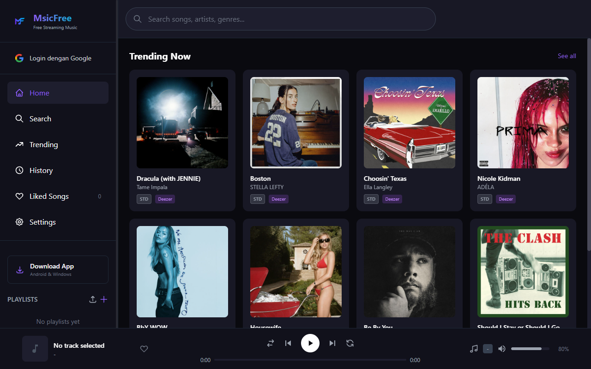

Buka situs
01
Live
MscFree — Music Streaming
Aplikasi streaming musik gratis tanpa iklan dan tanpa langganan. Metadata lagu diambil dari Deezer, audio diputar lewat YouTube IFrame, dan playlist tersinkron ke cloud setelah login Google.
- Playlist dengan drag & drop dan antrian pemutaran
- Keyboard shortcut: spasi, panah untuk seek & volume
- Sinkronisasi Firestore lintas perangkat
JavaScript
Tailwind
Firebase
Deezer API